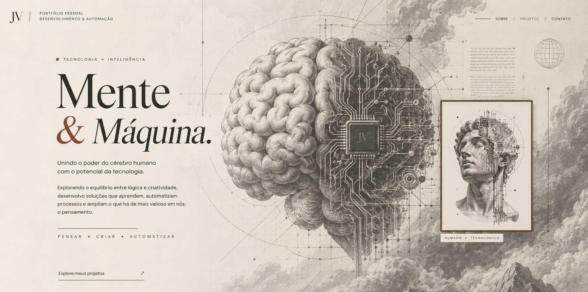
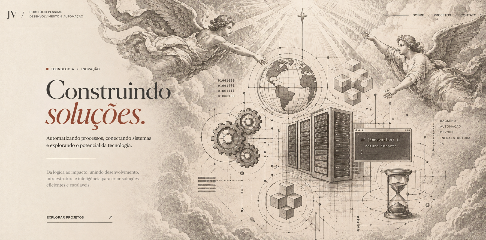
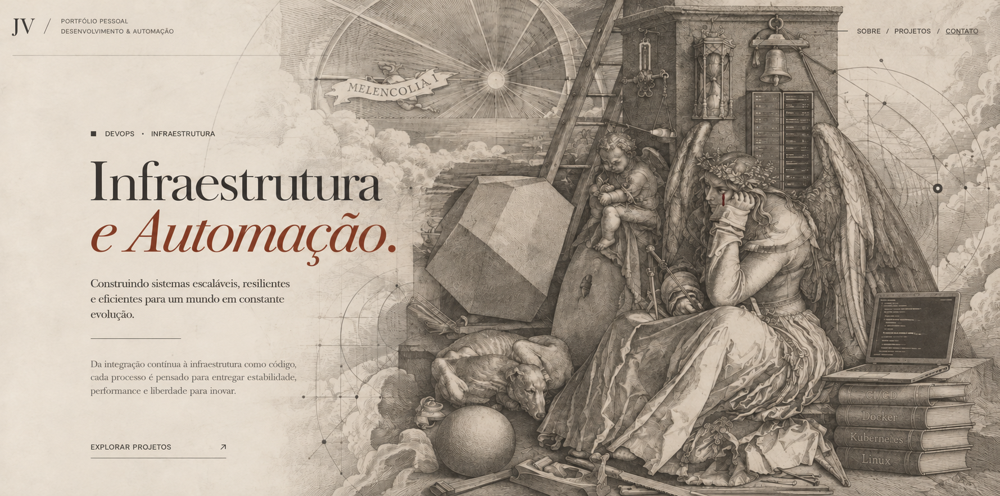
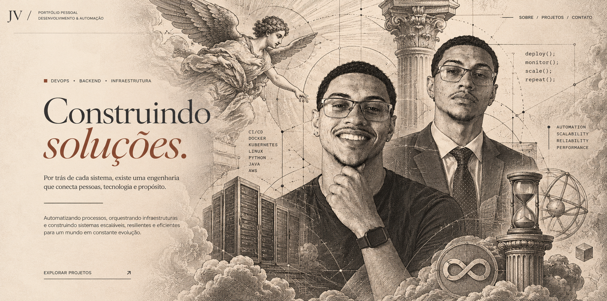
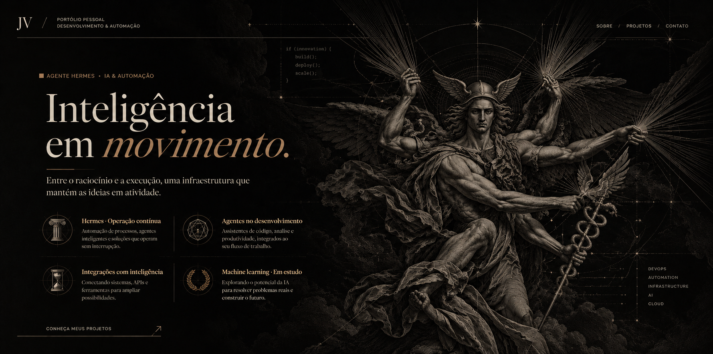
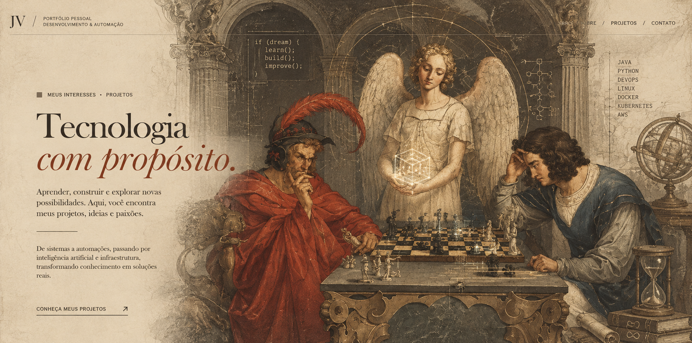

Explore meus projetos no GitHub
Explorar projetos
DevOps · Infraestrutura
Engenharia
com intenção.
Da arquitetura à operação, construo sistemas para resistir à complexidade.
Administro servidores e conecto código, infraestrutura e automação para transformar decisões de engenharia em estabilidade.
A precisão das gravuras antigas e o fascínio pela tecnologia orientam meu olhar: cada detalhe tem uma função; cada sistema, uma estrutura.

Explorar projetos
Agentes · Automação · Machine learning
Inteligência
em movimento.
Entre o raciocínio e a execução, uma infraestrutura que mantém as ideias em atividade.
Minha experiência com IA está na construção de automações e no trabalho com agentes: conectar ferramentas, dar contexto e transformar tarefas em fluxos executáveis.
Hermes · Operação contínua
Meu agente Hermes roda 24 horas por dia em uma VPS da Oracle. Um laboratório prático onde agentes e infraestrutura se encontram em uma operação contínua.
Agentes no desenvolvimento
Tenho experiência com Claude Code e Codex como agentes de apoio à engenharia de software, explorando sua aplicação no desenvolvimento e na automação.
Integrações com inteligência
Experiência com n8n, chatbots, pipelines RAG, busca vetorial e integrações via API para conectar modelos, dados e ferramentas.
Machine learning · Em estudo
Amplio meus estudos em aprendizado de máquina para compreender melhor dados, modelos e avaliação. Essa frente complementa minha experiência prática com agentes e sistemas de IA.

Epílogo / Arte & propósito
Obrigado por
chegar até aqui.
Toda trajetória é feita de escolhas.
A próxima jogada ainda pode transformar o
caminho.
Escolhi esta releitura de Os Jogadores de Xadrez, de Moritz Retzsch, porque encontro nela uma reflexão sobre o que fazer diante da incerteza: observar com atenção, recuperar a lucidez e procurar possibilidades antes de aceitar uma derrota.
É esse olhar que levo para a tecnologia e para a vida. Estudar o problema, aprender com os erros e construir o próximo passo com intenção. Obrigado por conhecer um pouco do meu trabalho e do que me inspira.